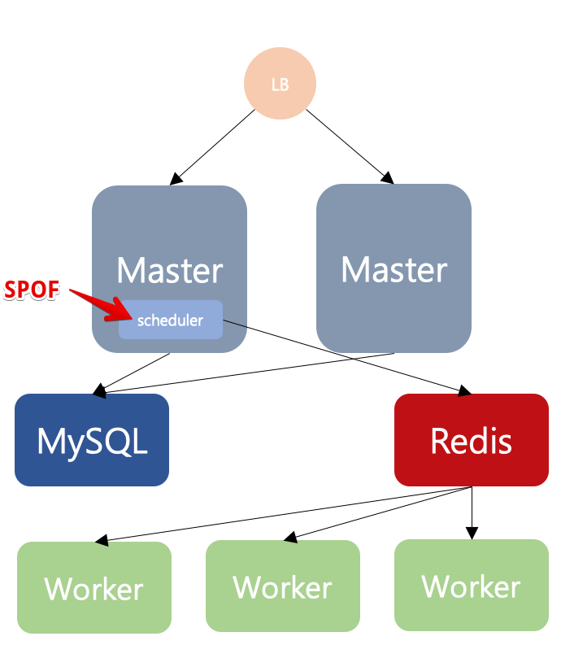

[Airflow] Scheduler SPOF(Single Point Of Failure) 제거하기

위의 그림은 celery executor를 이용한 여러대의 워커로 구성한 아키텍쳐이다. 이중 scheduler는 DB에서 스케줄 정보를 가져와 redis의 pub/sub을 이용하여 worker들에게 잡을 할당하는데, 이때 scheduler는 단일고장점(Single Point Of Failure-SPOF) 이 된다. 따라서 Downtime이 없는 airflow를 구성하려면 SPOF를 제거하는것이 중요한데 airflow 자체적으로 해결할수 있는 방법은 아직 존재하지 않는다.
‘master 서버에 scheduler를 두개 실행해놓으면 되지 않을까’ 라는 생각을 해보지만, 이렇게 scheduler를 여러개 실행하면 동일한 DAG가 실행시킨 scheduler 갯수만큼 실행된다.
이를 해결하기 위한 방법중 airflow-scheduler-failover-controller 를 이용하여 SPOF를 제거해 보고자 한다.
1. 설치
## 아래의 커맨드는 scheduler를 동작할 서버에서만 수행한다.
$ cd $AIRFLOW_HOME
$ pip install git+https://github.com/teamclairvoyant/airflow-scheduler-failover-controller.git@v1.0.5
## airflow.cfg 설정파일에 [scheduler_failover] 항목이 추가된다.
$ scheduler_failover_controller init
2. 설정
$ vi airflow.cfg
## [scheduler_failover] 부분을 기본설정으로 둔 뒤 아래의 것만 수정한다.
## scheduler를 동작시키는 서버의 아이피를 ,로 구분지어 적어준다.
scheduler_nodes_in_cluster = aaa.aaa.aaa.aaa,bbb.bbb.bbb.bbb
그후 scheduler 서버들끼리 ssh 터널링이 가능하도록 ssh 키 작업을 해준다. 예를 들어 scheduler를 동작시킬 webserver1,2 가 있다면 ssh를 통해 webserver 1->2로, webserver 2->1 로 접근 가능하도록 설정해야 한다.
$ ssh-keygen -t rsa
Generating public/private rsa key pair.
Enter file in which to save the key (/home/dev/.ssh/id_rsa): <엔터
Enter passphrase (empty for no passphrase): <엔터
Enter same passphrase again: <엔터
Your identification has been saved in /home/dev/.ssh/id_rsa.
Your public key has been saved in /home/dev/.ssh/id_rsa.pub.
The key fingerprint is:
xxx
The key's randomart image is:
+---[RSA 2048]----+
| |
| E |
| o |
| . = |
| . . S= o |
|o. .+ ..o.+ + . o|
|oooo.+...+.+ X = |
| |
| |
+----[SHA256]-----+
위와 같이 생성된 public 키를 접근하고자 하는 서버의 ~/.ssh/authorized_keys 파일에 추가한다.
즉 webserver1번의 id_rsa.pub 키를 webserver2번의 authorized_keys에 추가하고, webserver2번의 id_rsa.pub 키를 1번서버의 authorized_keys에 추가한다.
### 연결이 정상적인지 테스트 한다.
$ scheduler_failover_controller test_connection
Testing Connection for host 'xxx'
(True, ['Connection Succeeded', ''])
3. 실행
실행순서는 webserver -> scheduler failover controller -> scheduler 순으로 동작 시킨다. 이때 실행은 서버에 동시에 실행하지 않고 순차적으로 진행한다.
## webserver 실행
$ nohup airflow webserver > /dev/null 2>&1 &
## fail over controller 실행
$ nohup scheduler_failover_controller start > /dev/null &
## scheduler 실행
$ nohup airflow scheduler > /dev/null 2>&1 &
세팅이 정상적이라면 scheduler 여러개가 동작이 감지되면 하나만 남기고 모두 kill 시키기도 하고, scheduler가 중지되면 다른 스케줄러를 동작시키기도 한다.